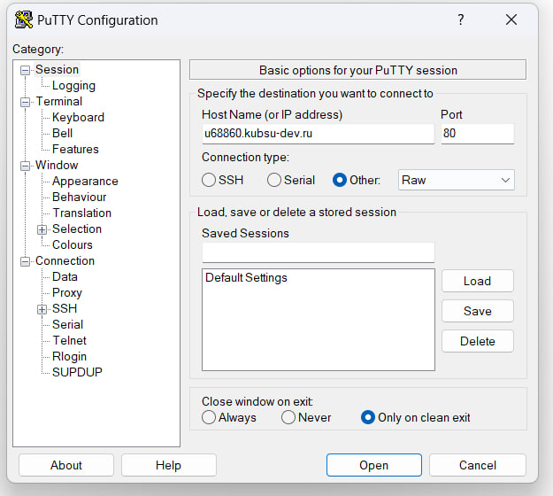
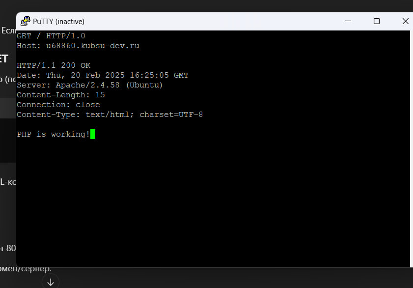
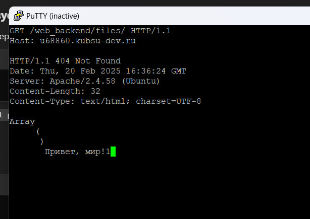
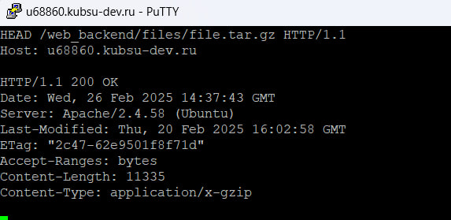
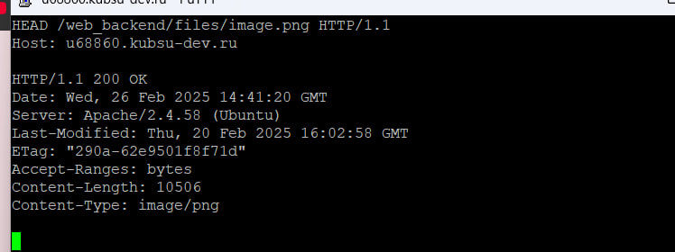
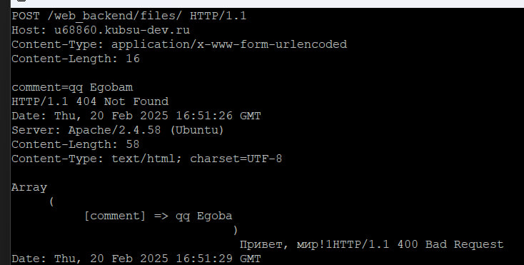
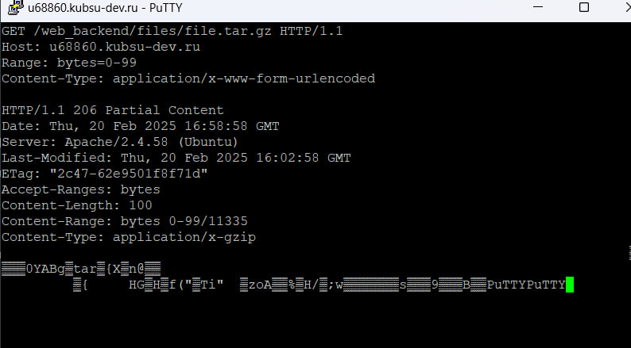
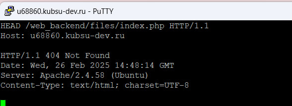

1. Через PUTTY на 80 порту (Это стандартный порт HTTP) будем отправлять GET/POST запросы на
сайт: u68860.kubsu-dev.ru

2. Получим главную страницу методом GET в протоколе HTTP 1.0
(HTTP/1.0 — это первая широко используемая версия протокола HTTP)

3. Получим внутреннюю страницу методом GET в протоколе HTTP 1.1
(HTTP/1.1 — это усовершенствованная версия протокола HTTP.
Главное отличие от HTTP/1.0: в HTTP/1.1 Host: обязателен!)
Метод GET в HTTP используется для запроса данных с сервера.

4. Определим размер файла file.tar.gz
Метод HEAD используется для получения заголовков HTTP-ответа без передачи тела ответа. Он помогает:
• Проверить существование ресурса
• Узнать размер файла (Content-Length)
• Определить медиатип (Content-Type).

5. Определим медиатип ресурса /image.png

6. Отправим комментарий на сервер по адресу /index.php
Метод POST отправляет данные на сервер для создания или изменения ресурса

7. Получим первые 100 байт файла /file.tar.gz

8. Определим кодировку ресурса /index.php